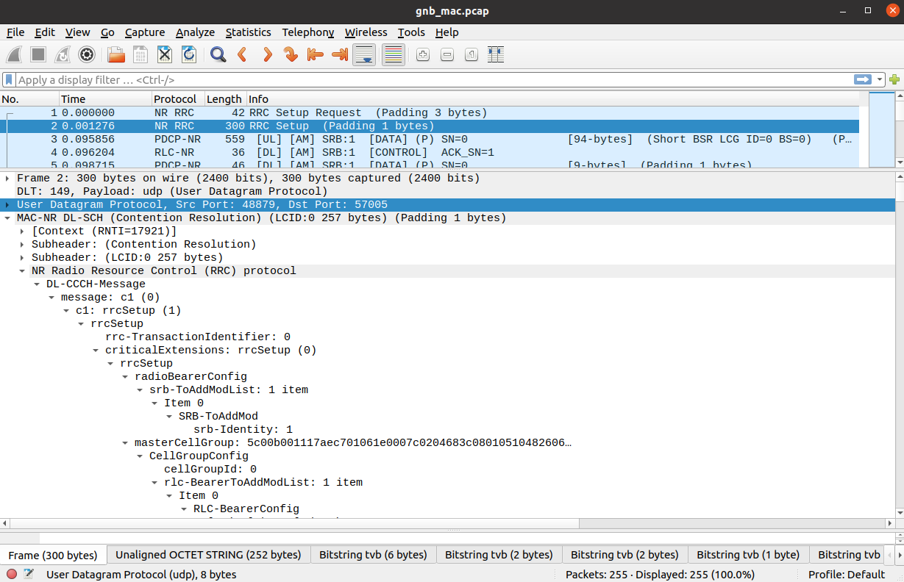
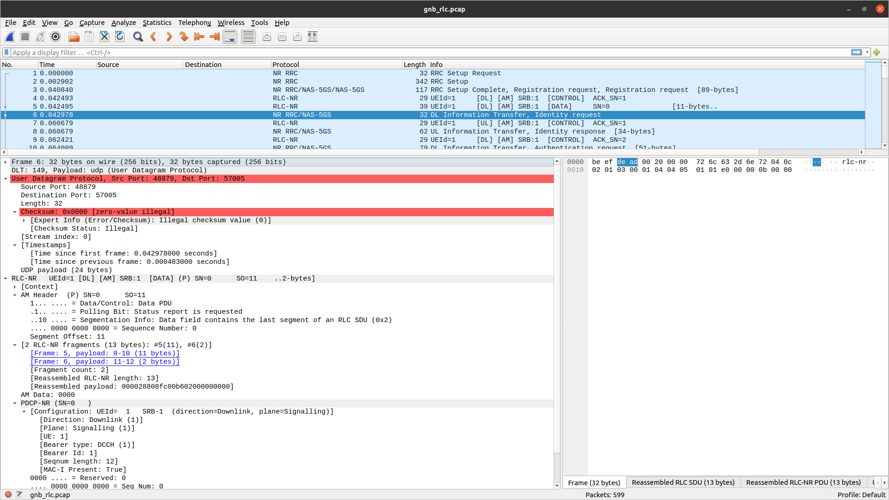
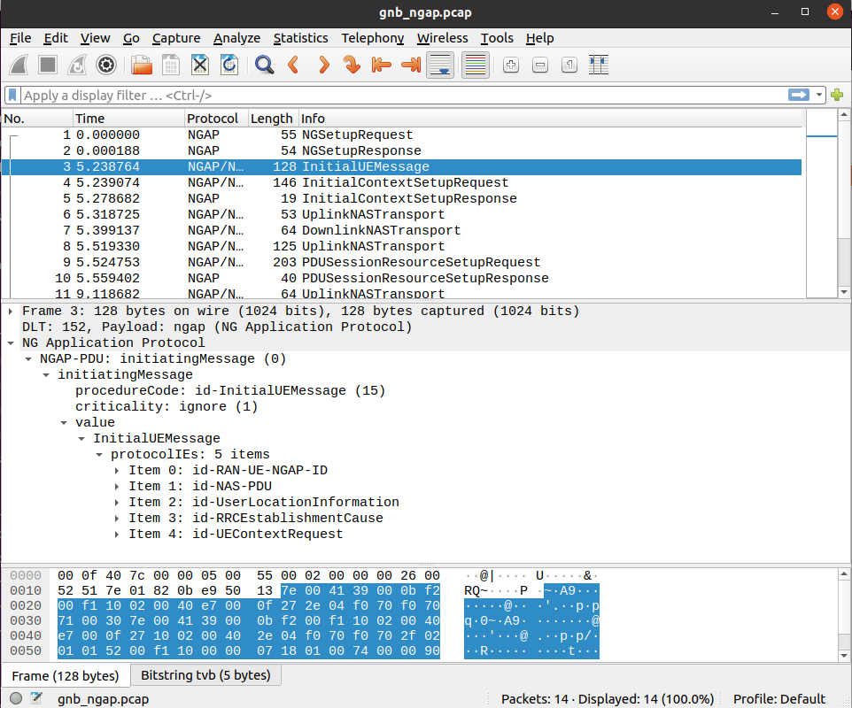
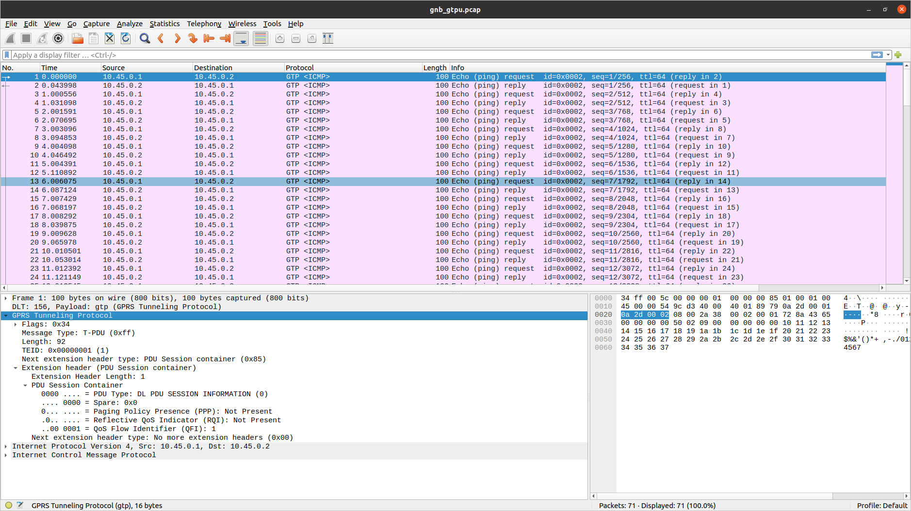
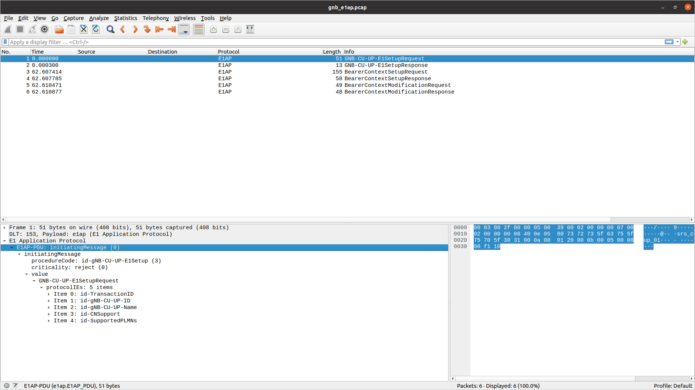
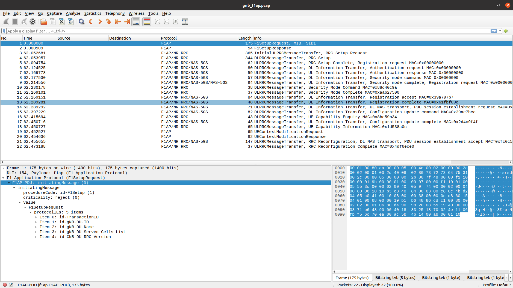

Outputs
Logs
The format used for all log messages is as follows:
Timestamp [Layer] [Level] [TTI] message
Where the fields are:
Timestamp in YYYY-MM-DDTHH:MM:SS.UUUUUU format at which log message was generated
Layer can be one of MAC/RLC/PDCP/RRC/SDAP/NGAP/GTPU/RADIO/FAPI/F1U/DU/CU/LIB. PHY layers are specified as downlink or uplink and with executor number e.g. DL-PHY1.
Level can be one of E/W/I/D for error, warning, info and debug respectively.
TTI is only shown for PHY or MAC messages and is in the format SFN.sn where SFN is System Frame Number and sn is slot number.
An example log file excerpt can be seen below:
2023-03-15T18:29:25.142200 [MAC ] [I] [ 276.14] UL PDU rnti=0x4601 ue=0 subPDUs: [lcid=1: len=96, SBSR: lcg=0 bs=0, SE_PHR: total_len=3, PAD: len=424]
2023-03-15T18:29:25.142204 [RLC ] [I] ue=0 SRB1 UL: RX PDU. pdu_len=96 dc=data p=1 si=full sn=0 so=0
2023-03-15T18:29:25.142226 [PDCP ] [I] ue=0 SRB1 UL: RX PDU. type=data pdu_len=94 sn=0 count=0
2023-03-15T18:29:25.142228 [PDCP ] [I] ue=0 SRB1 UL: RX SDU. count=0
2023-03-15T18:29:25.142245 [RRC ] [D] ue=0 SRB1 - Rx DCCH UL rrcSetupComplete (88 B)
2023-03-15T18:29:25.142249 [RRC ] [D] Content: [
{
"UL-DCCH-Message": {
"message": {
"c1": {
"rrcSetupComplete": {
"rrc-TransactionIdentifier": 0,
"criticalExtensions": {
"rrcSetupComplete": {
"selectedPLMN-Identity": 1,
"registeredAMF": {
"amf-Identifier": "000000100000000001000000"
},
"guami-Type": "native",
"dedicatedNAS-Message": "7e01820be950137e004139000bf200f110020040e7000f272e04f070f0707100307e004139000bf200f110020040e7000f27100200402e04f070f0702f0201015200f11000000718010074000090530101"
}
}
}
}
}
}
}
]
2023-03-15T18:29:25.142253 [RRC ] [D] ue=0 "RRC Setup Procedure" finished successfully
2023-03-15T18:29:25.142263 [NGAP ] [I] ue=0 Sending InitialUeMessage (ran_ue_id=0)
PCAPs
The srsRAN Project gNB can output PCAPs at the following layers:
MAC
NGAP
GTP-U
E1AP
F1AP
E2AP
To output these PCAPs, they must first be enabled on a per-layer basis in the gNB configuration file. See the Configuration Reference for more details.
MAC
To analyze a MAC-layer PCAP using Wireshark, you will need to configure User DLT 149 for UDP and enable the mac_nr_udp protocol:

Go to Edit->Preferences->Protocols->DLT_USER->Edit and add an entry with DLT=149 and Payload protocol=udp.
Go to Analyze->Enabled Protocols->MAC-NR and enable mac_nr_udp
Go to Edit->Preferences->Protocols->MAC-NR: Enable both checkboxes “Attempt to…”; Set LCID->DRB mapping to “From configuration protocol”.
RLC
Note
To correctly view the RLC PCAPs you will need Wireshark v4.3.x or later.
To analyze a RLC-layer PCAP using Wireshark, you will need to configure User DLT 149 for UDP and enable the rlc_nr_udp protocol:

Go to Edit->Preferences->Protocols->DLT_USER->Edit and add an entry with DLT=149 and Payload protocol=udp.
Go to Analyze->Enabled Protocols->RLC-NR and enable rlc_nr_udp
Go to Edit->Preferences->Protocols->RLC-NR and configure according to your needs.
NGAP
To analyze an NGAP-layer PCAP using Wireshark, you will need to configure User DLT 152 for NGAP and enable detection and decoding 5G-EA0 ciphered messages:

Go to Edit->Preferences->Protocols->DLT_USER->Edit and add an entry with DLT=152 and Payload protocol=ngap.
Go to Edit->Preferences->Protocols->NAS-5GS and enable “Try to detect and decode 5G-EA0 ciphered messages”.
GTP-U
To analyze a GTP-U PCAP using Wireshark, you will need to configure User DLT 156 for GTP:

Go to Edit->Preferences->Protocols->DLT_USER->Edit and add an entry with DLT=156 and Payload Protocol=gtp.
E1AP
To analyze an E1AP PCAP using Wireshark, you will need to configure User DLT 153 for E1AP:

Go to Edit->Preferences->Protocols->DLT_USER->Edit and add an entry with DLT=153 and Payload Protocol=e1ap.
F1AP
To analyze an F1AP PCAP using Wireshark, you will need to configure User DLT 154 for F1AP:

Go to Edit->Preferences->Protocols->DLT_USER->Edit and add an entry with DLT=154 and Payload Protocol=f1ap.
E2AP
To analyze an E2AP PCAP using Wireshark, you will need to configure User DLT 155 for E2AP:
Go to Edit->Preferences->Protocols->DLT_USER->Edit and add an entry with DLT=155 and Payload Protocol=e2ap.
{kind=link}